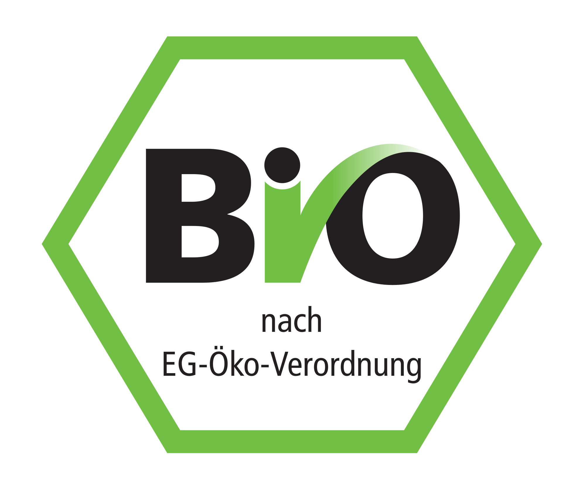
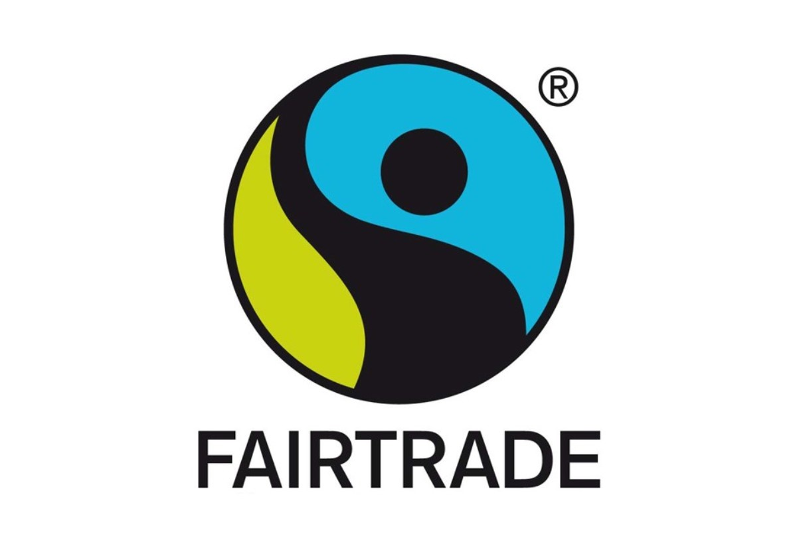

Informationen:
Hildegard war eine glückliches Sau, was im Osten von Deutschland auf einem Bio Familien-Bauernhof mit ihren zwei Geschwistern und seiner ebenfalls glücklichen Mutter groß geworden ist. Sie wurde nach besten Möglichkeiten gut versorgt. Es wurden dabei auf überflüssige Antibiotika verzichtet. Am 05.02.2019 wurde sie unter artgerechten Bedingungen geschlachtet.


